<!DOCTYPE html>
<html>
  <head>
    <title>My experiment</title>
    <script src="https://unpkg.com/jspsych@7.3.3"></script>
    <script src="https://unpkg.com/@jspsych/plugin-html-keyboard-response@1.1.2"></script>
    <script src="https://unpkg.com/@jspsych/plugin-image-keyboard-response@1.1.2"></script>
    <script src="https://unpkg.com/@jspsych/plugin-image-button-response@1.1.2"></script>
    <script src="https://unpkg.com/@jspsych/plugin-preload@1.1.2"></script>
    <script src="https://unpkg.com/@jspsych/plugin-html-button-response@1.1.2"></script>
    <link href="https://unpkg.com/jspsych@7.3.3/css/jspsych.css" rel="stylesheet" type="text/css" />
  </head>
  <body></body>

    <script>
        /* initialize jsPsych */
        var jsPsych = initJsPsych({
          on_finish: function() {
            jsPsych.data.displayData();
          }
        });

        /* create timeline */
        var timeline = [];

        /* preloading media (preload plugin) */
        var preload = {
          type: jsPsychPreload,
          images: [
            'img/accordion.png',
            'img/ancer.png',
            'img/barrel.png',
            'img/book.png',
            'img/camel.png',
            'img/crocodile.png',
            'img/crown.png',
            'img/harp.png',
            'img/kangaroo.png',
            'img/penguin.png',
            'img/rhinoceros.png',
            'img/spoon.png']
        };
        timeline.push(preload);


        /* show instructions to partipant. */
        var instructions = {
            type: jsPsychHtmlButtonResponse,
            stimulus: `
            <p>In this experiment, a command and 12 images will be displayed 
            on the screen. You will have to click on the image associated with
            the description and then on 'Next'.</p>
            <p>For example: "Click on the one which is associated with the monarchy."</p>
                
            <p>Press <strong>Next</strong> to begin.</p>
            `,
            choices: ['Next'],
            button_html: '<button class="jspsych-btn" style="font-size: 25px;">%choice%</button>',
        };
        timeline.push(instructions);


        /* trial stimuli array for timeline variables */
        var instructionStimuli = [
          { stimulus: `
            <p>Click on the one which is associated with the monarchy.</p>`,
            correct_response: [9,12]},
          { stimulus: `
            <p>Click on the one which is a marsupial.</p>`,
            correct_response: [2,12]},
          { stimulus: `
            <p>Click on the one which is found in the Antarctic.</p>`,
                correct_response: [3,12]},
          { stimulus: `
            <p>Click on the the one which has a nautical connection.</p>`,
            correct_response: [4,12]},
          
        ];

        /* display images as buttons */
        var displayImages = {
            type: jsPsychHtmlButtonResponse,
            stimulus: jsPsych.timelineVariable('stimulus'),
            choices: [
            `<div>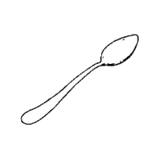</img>`,
            `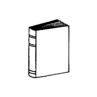</img>`,
            `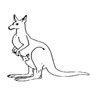</img></div><div>`,
            `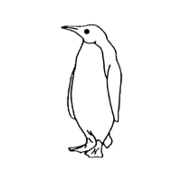</img>`,
            `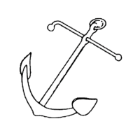</img>`,
            `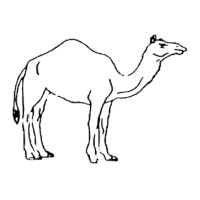</img></div><div>`,
            `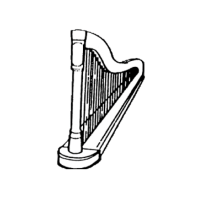`,
            `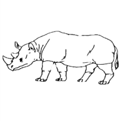</img>`,
            `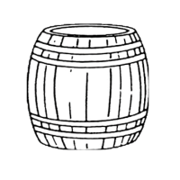</img></div><div>`,
            `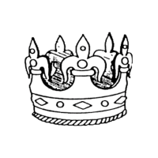</img>`,
            `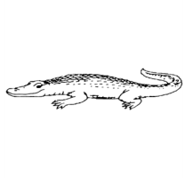</img>`,
            `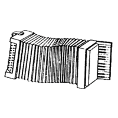</img></div></div><div>`,
            `Next</div>`],
            button_html: '<button class="jspsych-btn" style="font-size: 25px; border: none;"><strong>%choice%</strong></button>',
            data: {
                task: 'response',
                correct_response: jsPsych.timelineVariable('correct_response')
            },
            on_finish: function(data){
                data.correct = data.response === data.correct_response[ind];
                // console.log(data.response);
                // console.log(data.correct_response);
                // console.log(data.correct = data.response === data.correct_response);
            }
        };

        /* Timeline that alternates between instructions and images */
        var ind = 0;
        var testInstructions = {
          timeline: [
          //nested timeline to keep 'image screen' until 'Next' is clicked
          {
          timeline: [displayImages],
          loop_function: function(data){
            console.log('index is');
            console.log(ind);
            console.log('response is:');
            console.log(data.values()[0].response);
            console.log('correct response is:');
            console.log(data.values()[0].correct_response[ind]);
            // === 12 means Next
            if (data.values()[0].response === 12){
              console.log('in if');
              ind = 0;
              return false;
            } else {
              console.log('not in if');
              console.log(data.values()[0].response);
              console.log(data.values()[0].correct_response[ind]);
              console.log(data.values()[0].response === data.values()[0].correct_response[ind]);
              ind++;
              return true;
            }
          }
        }],
          timeline_variables: instructionStimuli,
          randomize_order: false,
        };
        timeline.push(testInstructions);


        var debrief_block = {
          type: jsPsychHtmlKeyboardResponse,
          stimulus: function() {

            var trials = jsPsych.data.get().filter({task: 'response'});
            var correct_trials = trials.filter({correct: true});
            var accuracy = Math.round(correct_trials.count() / (trials.count()) * 100);
            var rt = Math.round(correct_trials.select('rt').mean());

            return `<p>You responded correctly on ${accuracy}% of the trials.</p>
              <p>Your average response time was ${rt}ms.</p>
              <p>Press any key to complete the experiment. Thank you!`;

          }
        };
        timeline.push(debrief_block);
                
        /* start the experiment */
        jsPsych.run(timeline);
        
    </script>
</html>